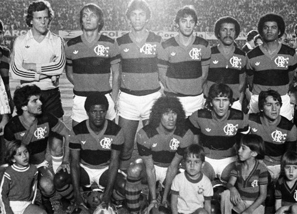

Nossa história
O Flamengo foi fundado em 17 de novembro de 1895 para as disputas de remo. A entrada da equipe no futebol aconteceu em 1912. Atualmente, o time rubro-negro é o maior vencedor da história do Campeonato Carioca, com 31 títulos. Segundo diversas pesquisas, é o clube com o maior número de torcedores do País. Os dois principais títulos da história do Flamengo ocorreram em 1981. Comandado pelo ídolo Zico, o time conquistou a Copa Libertadores da América, em final contra o Cobreloa, do Chile, e o Mundial Interclubes, diante do Liverpool, da Inglaterra. Foi na década de 1980, também, que o Flamengo conquistou o seu primeiro Campeonato Brasileiro